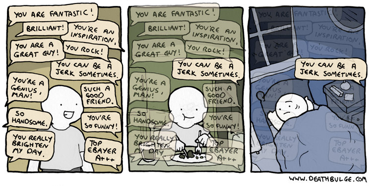
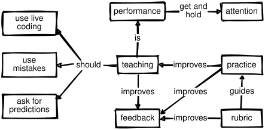

8 Teaching as a Performance Art
In Darwin Among the Machines, George Dyson wrote, “In the game of life and evolution there are three players at the table: human beings, nature, and machines. I am firmly on the side of nature. But nature, I suspect, is on the side of the machines…” There are similarly now three players in the game of education: textbooks and other read-only materials, live lectures, and automated online lessons. You may give your learners both written lessons and some combination of recorded video and self-paced exercises, but if you are going to teach in person you must offer something different from (and hopefully better than) either of them. This chapter therefore focuses on how to teach programming by actually doing it.
8.1 Live Coding
Teaching is theater, not cinema.
— Neal Davis
The most effective way to teach programming is live coding Raj et al. (2018). Instead of presenting pre-written material, the teacher writes code in front of the class while the learners follow along, typing it in and running it as they go. Live coding works better than slides for several reasons:
It enables active teaching by allowing teachers to follow their learners’ interests and questions in the moment. A slide deck is like a railway track: it may be a smooth ride, but you have to decide in advance where you’re going. Live coding is more like driving an off-road vehicle: it may be bumpier, but it’s a lot easier to change direction and go where people want.
Watching a program being written is more motivating than watching someone page through slides.
It facilitates unintended knowledge transfer: people learn more than we are consciously teaching by watching how we do things.
It slows the teacher down: if they have to type in the program as they go along then they can only go twice as fast as their learners rather than ten times faster as they could with slides.
It helps reduce the load on short-term memory because it makes the teacher more aware of how much they are throwing at their learners.
Learners get to see how to diagnose and correct mistakes. They are going to spend a lot of time doing this; unless you’re a perfect typist, live coding ensures that they get to see how to.
Watching teachers make mistakes shows learners that it’s all right to make mistakes of their own. If the teacher isn’t embarrassed about making and talking about mistakes, learners will be more comfortable doing so too.
Another benefit of live coding is that it demonstrates the order in which programs should be written. When looking at how people solved Parsons Problems, (Ihantola and Karavirta 2011) found that experienced programmers often dragged the method signature to the beginning, then added the majority of the control flow (i.e. loops and conditionals), and only then added details like variable initialization and handling of corner cases. This out-of-order authoring is foreign to novices, who read and write code in the order it’s presented on the page; seeing it helps them learn to decompose problems into subgoals that can be tackled one by one. Live coding also gives teachers a chance to emphasize the importance of small steps with frequent feedback (Blikstein et al. 2014) and the importance of picking a plan rather than making more-or-less random changes and hoping things will get better (Spohrer et al. 1985).
It takes a bit of practice to get comfortable talking while you code in front of an audience, but most people report that it quickly becomes no more difficult than talking around a deck of slides. The sections below offer tips on how to make your live coding better.
Embrace Your Mistakes
The typos are the pedagogy.
— Emily Jane McTavish
The most important rule of live coding is to embrace your mistakes. No matter how well you prepare, you will make some; when you do, think through them with your audience. While data is hard to come by, professional programmers spend anywhere from 25% to 60% of their time debugging; novices spend much more (Section 7.6), but most textbooks and tutorials spend little time diagnosing and correcting problems. If you talk aloud while you figure out what you mistyped or where you took the wrong path, and explain how you’ve corrected yourself, you will give your learners a toolbox they can use when they make their own mistakes.
Once you have given a lesson several times, you’re unlikely to make anything other than basic typing mistakes (which can still be informative). You can try to remember past mistakes and make them deliberately, but that often feels forced. An alternative approach is twitch coding: ask learners one by one to tell you what to type next. This is pretty much guaranteed to get you into some kind of trouble.
Ask For Predictions
One way to keep learners engaged while you are live coding is to ask them to make predictions about what the code on the screen is going to do. You can then write down the first few suggestions they make, have the whole class vote on which they think is most likely, and then run the code. This is a lightweight form of peer instruction, which we will discuss in Section 9.2; as well as keeping their attention on task, it gives them practice at reasoning about code’s behavior.
Take It Slow
Every time you type a command, add a line of code to a program, or select an item from a menu, say what you are doing out loud and then point to what you have done and its output on the screen and go through it a second time. This allows learners to catch up and to check that what they have just done is correct. It is particularly important when some of your learners have seeing or hearing challenges or are not fluent in the language of instruction.
Whatever you do, don’t copy and paste code: doing this practically guarantees that you’ll race ahead of your learners. And if you use tab completion, say it out loud so that your learners understand what you’re doing: “Let’s use turtle dot ‘r’ ‘i’ and tab to get ‘right’.”
If the output of your command or code makes what you just typed disappear from view, scroll back up so learners can see it again. If that’s not practical, execute the same command a second time or copy and paste the last command(s) into the workshop’s shared notes.
Be Seen and Heard
When you sit down, you are more likely to look at your screen rather than at your audience and may be hidden from learners in the back rows of your classroom. If you are physically able to stand up for a couple of hours, you should therefore do so while teaching. Plan for this and make sure that you have a raised table, standing desk, or lectern for your laptop so that you don’t have to bend over to type.
Regardless of whether you are standing or sitting, make sure to move around as much as you can: go to the screen to point something out, draw something on the whiteboard, or just step away from your computer for a few moments and speak directly to your audience. Doing this draws your learners’ attention away from their screens and provides a natural time for them to ask questions.
If you are going to be teaching for more than a couple of hours, it’s worth using a microphone even in a small room. Your throat gets tired just like every other part of your body; using a mike is no different from wearing comfortable shoes (which you also ought to do). It can also make a big difference to people with hearing disabilities.
Mirror Your Learner’s Environment
You may have customized your environment with a fancy Unix shell prompt, a custom color scheme for your development environment, or a plethora of keyboard shortcuts. Your learners won’t have any of this, so try to create an environment that mirrors what they do have. Some teachers create a separate bare-bones account on their laptop or a separate teaching-only account if they’re using an online service like Scratch or GitHub. Doing this can also help prevent packages that you installed for work yesterday breaking the lesson you are supposed to teach this morning.
Use the Screen Wisely
You will usually need to enlarge your font considerably for people to read it from the back of the room, which means you can put much less on the screen than you’re used to. In many cases you will be reduced to 60–70 columns and 20–30 rows, so that you’re using a 21st century supercomputer as if it was a dumb terminal from the early 1980s.
To manage this, maximize the window you are using to teach and then ask everyone to give you a thumbs-up or thumbs-down on its readability. Use a black font on a lightly-tinted background rather than a light font on a dark background—the light tint will glare less than pure white.
Pay attention to the room lighting as well: it should not be fully dark, and there should be no lights directly on or above your projection screen. Allow a few minutes for learners to reposition their tables so that they can see clearly.
When the bottom of the projection screen is at the same height as your learners’ heads, people in the back won’t be able to see the lower parts. You can raise the bottom of your window to compensate, but this will give you even less space for typing.
If you can get a second projector and screen, use it: the extra real estate will allow you to display your code on one side and its output or behavior on the other. If second screen requires its own computer, ask a helper to control it rather than hopping back and forth between two keyboards.
Finally, if you are teaching something like the Unix shell in a console window, it’s important to tell people when you run an in-console text editor and when you return to the console prompt. Most novices have never seen a window take on multiple personalities in this way, and can quickly become confused by when you are interacting with the shell, when you are typing in the editor, and when you are dealing with an interactive prompt for Python or some other language. You can avoid this problem by using a separate window for editing; if you do this, always tell learners when you are switching focus from one to the other.
Tools like Mouseposé (for Mac) and PointerFocus (for Windows) highlight the position of your mouse cursor on the screen, and screen recording tools like Camtasia and standalone applications like KeyCastr echo invisible keys like tab and Control-J as you type them. These can be a bit annoying when you first start to use them, but help your learners figure out what you’re doing.
Double Devices
Some people now use two devices when teaching: a laptop plugged into the projector for learners to see and a tablet so that they can view their own notes and the notes that the learners are taking (Section 9.7). This is more reliable than flipping back and forth between virtual desktops, though a printout of the lesson is still the most reliable backup technology.
Draw Early, Draw Often
Diagrams are always a good idea. I sometimes have a slide deck full of ones that I have prepared in advance, but building diagrams step by step helps with retention (Section 4.1) and allows you to improvise.
Avoid Distractions
Turn off any notifications you may use on your laptop, especially those from social media. Seeing messages flash by on the screen distracts you as well as your learners, and it can be awkward when a message pops up you’d rather not have others see. Again, you might want to create a second account on your computer that doesn’t have email or other tools set up at all.
Improvise—After You Know the Material
Stick fairly closely to the lesson plan you’ve drawn up or borrowed the first time you teach a lesson. It may be tempting to deviate from the material because you would like to show a neat trick or demonstrate another way to do something, but there is a fair chance you’ll run into something unexpected that will cost you more time than you have.
Once you are more familiar with the material, though, you can and should start improvising based on the backgrounds of your learners, their questions in class, and what you personally find most interesting. This is like playing a new song: you stick to the sheet music the first few times, but after you’re comfortable with the melody and chord changes, you can start to put your own stamp on it.
When you want to use something new, run through it beforehand using the same computer that you’ll be teaching on: installing several hundred megabytes of software over high school WiFi in front of bored 16-year-olds isn’t something you ever want to have to do.
Direct Instruction (DI) is a teaching method centered around meticulous curriculum design delivered through a prescribed script. It’s more like an actor reciting lines than it is like the improvisational approach we recommend. (Stockard et al. 2018) found a statistically significant positive effect for DI even though it sometimes gets knocked for being mechanical. I prefer improvisation because DI requires more up-front preparation than most free-range learning groups can afford.
Face the Screen—Occasionally
It’s OK to face the projection screen occasionally when you are walking through a section of code or drawing a diagram: not looking at a roomful of people who are all looking at you can help lower your anxiety levels and give you a moment to think about what to say next.
You shouldn’t do this for more than a few seconds at a time, though. A good rule of thumb is to treat the projection screen as one of your learners: if it would be uncomfortable to stare at someone for as long as you are spending looking at the screen, it’s time to turn around and face your class again.
Drawbacks
Live coding does have some drawbacks, but they can all be avoided or worked around with a little bit of practice. If you find that you are making too many trivial typing mistakes, set aside five minutes every day to practice typing: it will help your day-to-day work as well. If you think you are spending too much time referring to your lesson notes, break them into smaller pieces so that you only ever have to think about one small step at a time.
And if you feel that you’re spending too much time typing in library import statements, class headers, and other boilerplate code, give yourself and your learners some skeleton code as a starting point (Section 9.9). Doing this will also reduce their cognitive load, since it will focus their attention where you want it.
8.2 Lesson Study
From politicians to researchers and teachers themselves, educational reformers have designed systems to find and promote people who can teach well and eliminate those who cannot. But the assumption that some people are born teachers is wrong: instead, like any other performance art, the keys to better teaching are practice and collaboration. As (Green 2014) explains, the Japanese approach to this is called jugyokenkyu, which means “lesson study”:
In order to graduate, [Japanese] education majors not only had to watch their assigned master teacher work, they had to effectively replace him, installing themselves in his classroom first as observers and then, by the third week, as a wobbly…approximation of the teacher himself. It worked like a kind of teaching relay. Each trainee took a subject, planning five days’ worth of lessons… [and then] each took a day. To pass the baton, you had to teach a day’s lesson in every single subject: the one you planned and the four you did not… and you had to do it right under your master teacher’s nose. Afterward, everyone—the teacher, the college students, and sometimes even another outside observer—would sit around a formal table to talk about what they saw.
Putting work under a microscope in order to improve it is commonplace in fields as diverse as manufacturing and music. A professional musician, for example, will dissect half a dozen recordings of “Body and Soul” or “Smells Like Teen Spirit” before performing it. They would also expect to get feedback from fellow musicians during practice and after performances.
But continuous feedback isn’t part of teaching culture in most English-speaking countries. There, what happens in the classroom stays in the classroom: teachers don’t watch each other’s lessons on a regular basis, so they can’t borrow each other’s good ideas. Teachers may get lesson plans and assignments from colleagues, the school board or a textbook publisher, or go through a few MOOCs on the internet, but each one has to figure out how to deliver specific lessons in specific classrooms for specific learners. This is particularly true for volunteers and other free-range teachers involved in after-school workshops and bootcamps.
Writing up new techniques and giving demonstration lessons (in which one person teaches actual learners while other teachers observe) are not solutions. For example, Fincher et al. (2012) found that of the 99 change stories analyzed, teachers only searched actively for new practices or materials in three cases, and only consulted published material in eight. Most changes occurred locally, without input from outside sources, or involved only personal interaction with other educators. (Barker et al. 2015) found something similar:
Adoption is not a “rational action”…but an iterative series of decisions made in a social context, relying on normative traditions, social cueing, and emotional or intuitive processes… Faculty are not likely to use educational research findings as the basis for adoption decisions… Positive student feedback is taken as strong evidence by faculty that they should continue a practice.
Jugyokenkyu works because it maximizes the opportunity for unplanned knowledge transfer between teachers: someone sets out to demonstrate X, but while watching them, their audience actually learns Y as well (or instead). For example, a teacher might intend to show learners how to search for email addresses in a text file, but what their audience might take away is some new keyboard shortcuts.
8.3 Giving and Getting Feedback on Teaching
Observing someone helps you, and giving them feedback helps them, but it can be hard to receive feedback, especially when it’s negative (Figure 8.1).

Feedback is easier to give and receive when both parties share expectations about what is and isn’t in scope and about how comments ought to be phrased. If you are the person asking for feedback:
- Initiate feedback.
- It’s better to ask for feedback than to receive it unwillingly.
- Choose your own questions,
- i.e. ask for specific feedback. It’s a lot harder for someone to answer, “What do you think?” than to answer either, “Was I speaking too quickly?” or , “What is one thing from this lesson I should keep doing?” Directing feedback like this is also more helpful to you. It’s always better to try to fix one thing at once than to change everything and hope it’s for the better. Directing feedback at something you have chosen to work on helps you stay focused, which in turn increases the odds that you’ll see progress.
- Use a feedback translator.
- Have someone else read over all the feedback and give you a summary. It can be easier to hear, “Several people think you could speed up a little,” than to read several notes all saying, “This is too slow” or, “This is boring.”
- Be kind to yourself.
- Many of us are very critical of ourselves, so it’s always helpful to jot down what we thought of ourselves before getting feedback from others. That allows us to compare what we think of our performance with what others think, which in turn allows us to scale the former more accurately. For example, it’s very common for people to think that they’re saying “um” and “err” too often when their audience doesn’t notice it. Getting that feedback once allows teachers to adjust their assessment of themselves the next time they feel that way.
You can give feedback to others more effectively as well:
- Interact.
- Staring at someone is a good way to make them feel uncomfortable, so if you want to give feedback on how someone normally teaches, you need to set them at ease. Interacting with them the way that a real learner would is a good way to do this, so ask questions or (pretend to) type along with their example. If you are part of a group, have one or two people play the role of learner while the others take notes.
- Balance positive and negative feedback.
- The “compliment sandwich” made up of one positive comment, one negative, and a second positive becomes tiresome pretty quickly, but it’s important to tell people what they should keep doing as well as what they should change1.
- Take notes.
- You won’t remember everything you noticed if the presentation lasts longer than a few seconds, and you definitely won’t recall how often you noticed them. Make a note the first time something happens and then add a tick mark when it happens again so that you can sort your feedback by frequency.
Taking notes is more efficient when you have some kind of rubric so that you’re not scrambling to write your observations while the person you’re observing is still talking. The simplest rubric for free-form comments from a group is a 2x2 grid whose vertical axis is labeled “what went well” and “what can be improved”, and whose horizontal axis is labeled “content” (what was said) and “presentation” (how it was said). Observers write their comments on sticky notes as they watch the demonstration, then post those in the quadrants of a grid drawn on a whiteboard (Figure 8.2).
Section F.1 contains a sample rubric for assessing 5–10 minutes of programming instruction. It presents items in more or less the order that they’re likely to come up, e.g. questions about the introduction come before questions about the conclusion.
Rubrics like this one tend to grow over time as people think of things they’d like to add. A good way to keep them manageable is to insist that the total length stays constant: if someone wants to add a question, they have to identify one that’s less important and can be removed.
If you are interested in giving and getting feedback, (Gormally et al. 2014) has good advice that you can use to make peer-to-peer feedback a routine part of your teaching, while (Gawande 2011) looks at the value of having a coach.
Architecture schools often include studio classes in which students solve small design problems and get feedback from their peers right then and there. These classes are most effective when the teacher critiques the peer critiques so that participants learn not only how to make buildings but how to give and get feedback (Schön 1984). Master classes in music serve a similar purpose, and I have found that giving feedback on feedback helps people improve their teaching as well.
8.4 How to Practice Performance
The best way to improve your in-person lesson delivery is to watch yourself do it:
Work in groups of three.
Each person rotates through the roles of teacher, audience, and videographer. The teacher has 2 minutes to explain something. The person pretending to be the audience is there to be attentive, while the videographer records the session using a cellphone or other handheld device.
After everyone has finished teaching, the whole group watches the videos together. Everyone gives feedback on all three videos, i.e. people give feedback on themselves as well as on others.
After the videos have been discussed, they are deleted. (Many people are justifiably uncomfortable about images of themselves appearing online.)
Finally, the whole class reconvenes and adds all the feedback to a shared 2x2 grid of the kind described above without saying who each item of feedback is about.
In order for this exercise to work well:
Record all three videos and then watch all three. If the cycle is teach-review-teach-review, the last person to teach invariably runs short of time (sometimes on purpose). Doing all the reviewing after all the teaching also helps put a bit of distance between the two, which makes the exercise slightly less excruciating.
Let people know at the start of the class that they will be asked to teach something so that they have time to choose a topic. Telling them this too far in advance can be counter-productive, since some people will fret over how much they should prepare.
Groups must be physically separated to reduce audio cross-talk between their recordings. In practice, this means 2–3 groups in a normal-sized classroom, with the rest using nearby breakout spaces, coffee lounges, offices, or (on one occasion) a janitor’s storage closet.
People must give feedback on themselves as well as on each other so that they can calibrate their impressions of their own teaching against those of other people. Most people are harder on themselves than they ought to be, and it’s important for them to realize this.
The announcement of this exercise is often greeted with groans and apprehension, since few people enjoy seeing or hearing themselves. However, those same people consistently rate it as one of the most valuable parts of teaching workshops. It’s also good preparation for co-teaching (Section 9.3): teachers find it a lot easier to give each other informal feedback if they have had some practice doing so and have a shared rubric to set expectations.
And speaking of rubrics: once the class has put all of their feedback on a shared grid, pick a handful of positive and negative comments, write them up as a checklist, and have them do the exercise again. Most people are more comfortable the second time around, and being assessed on the things that they themselves have decided are important increases their sense of self-determination (Chapter 10).
We all have nervous habits: we talk more rapidly and in a higher-pitched voice than usual when we’re on stage, play with our hair, or crack our knuckles. Gamblers call these “tells,” and people often don’t realize that they pace, look at their shoes, or rattle the change in their pocket when they don’t actually know the answer to a question.
You can’t get rid of tells completely, and trying to do so can make you obsess about them. A better strategy is to try to displace them—for example, to train yourself to scrunch your toes inside your shoes when you’re nervous instead of cleaning your ear with your pinky finger.
8.5 Exercises
8.5.1 Give Feedback on Bad Teaching (whole class/20 min)
As a group, watch this video of bad teaching and give feedback on two axes: positive vs. negative and content vs. presentation. Have each person in the class add one point to a 2x2 grid on a whiteboard or in the shared notes without duplicating any points. What did other people see that you missed? What did they think that you strongly agree or disagree with?
8.5.2 Practice Giving Feedback (small groups/45 min)
Use the process described in Section 8.4 to practice teaching in groups of three and pool feedback.
8.5.3 The Bad and the Good (whole class/20 min)
Watch the videos of live coding done poorly and live coding done well and summarize your feedback on the differences using the usual 2x2 grid. How is the second round of teaching better than the first? Is there anything that was better in the first than in the second?
8.5.4 See, Then Do (pairs/30 min)
Teach 3–4 minutes of a lesson using live coding to a classmate, then swap and watch while that person live codes for you. Don’t bother trying to record these sessions—it’s difficult to capture both the person and the screen with a handheld device—but give feedback the same way you have previously. Explain in advance to your fellow trainee what you will be teaching and what the learners you teach it to are expected to be familiar with.
What felt different about live coding compared to standing up and lecturing? What was easier or harder?
Did you make any mistakes? If so, how did you handle them?
Did you talk and type at the same time, or alternate?
How often did you point at the screen? How often did you highlight with the mouse?
What will you try to keep doing next time? What will you try to do differently?
8.5.5 Tells (small groups/15 min)
Make a note of what you think your tells are, but do not share them with other people.
Teach a short lesson (2–3 minutes long).
Ask your audience how they think you betray nervousness. Is their list the same as yours?
8.5.6 Teaching Tips (small groups/15 min)
The CS Teaching Tips site has a large number of practical tips on teaching computing, as well as a collection of downloadable tip sheets. Go through their tip sheets in small groups and classify each tip according to whether you use it all the time, use it occasionally, or never use it. Where do your practice and your peers’ practice differ? Are there any tips you strongly disagree with or think would be ineffective?
Review

For a while, I was so worried about playing in tune that I completely lost my sense of timing.↩︎